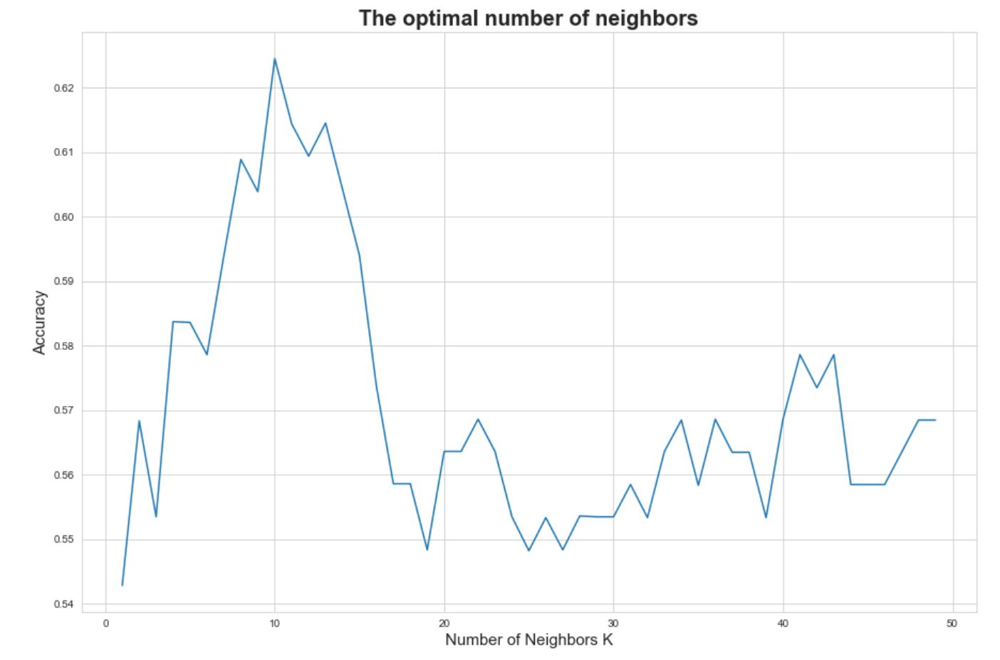
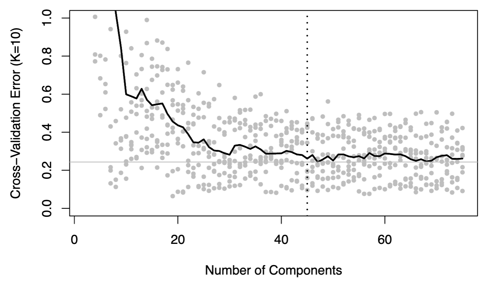

Cross-Validation
 When creating effective predictive models, one of the most important parts of the process is cross-validation. There are many checks to make on the state of the data before implementing a model, including independnece, homoscedasticity, variable relationships, and residual normality; however, another important factor to consider working with more complex predictive models is that of accurary. Cross validation not only allows for you to test the predictive performance of your model, but it also ensures that you can test such performance across a variety of model parameters and conditions.
 These two visualizations were pulled from two different projects, both involving testing the predictive performance of two different predictice models. The first visualization shows a cross-validation chart for the most optimal number of neighbors, an key parameter for all clustering models, which was what I was using in this specific project. By writing a short function to produce clustering models for all possible values for number of neighbors, I can assess which model provides the highest accuracy rate to use for my final modeling. The second visualization shows a cross-validation chart for a principal components regression model with k=10 folds, for which I wrote a function that would produce the model's error rate for all possible number of principal components. Cross-validation is an important skill for data scientists who want to make purposeful and well-supported decisions about what parameters to use for their statistical models. The first visualization was created in Python, and the second was created in R.